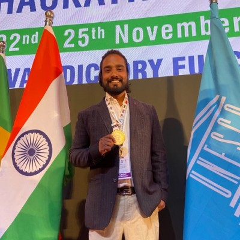

A
Agents that actually work
I design and evaluate agentic frameworks with tool use and Retrieval-Augmented Generation (RAG). Today that work is for Johnson & Johnson, and I tune agents with prompt optimization and reinforcement learning.
In industry R&D, I turn ideas into intelligent systems that ship. My work runs from classic ML and NLP to large and small language models (LLMs and SLMs), and on to autonomous AI agents that reason, plan, and act. My doctoral research at IIT Jammu, “Towards Efficient, Secure, and Deployable Machine Learning Systems”, comes down to one question: how do we make AI fast, safe, and ready for the real world?

Travel is my favourite hobby. I love exploring new places and cultures. 13 countries & regions so far, and counting:
01 — What I do
I design and evaluate agentic frameworks with tool use and Retrieval-Augmented Generation (RAG). Today that work is for Johnson & Johnson, and I tune agents with prompt optimization and reinforcement learning.
A trained model is valuable, and attackers can copy it just by querying it. My Probabilistic Defense Framework makes that kind of model extraction much harder.
I use LLMs to catch phishing pages and URLs in real time, and I build detectors against prompt injection. I also study security flaws in LLM-generated code and data leakage in federated learning.
Not every device has a GPU. I compress networks and design cheaper activation functions so deep learning runs on constrained hardware. I also build LLM resources for low-resource languages like Maithili.
02 — Selected research
IEEE Transactions on Consumer Electronics · 2026
A defense that protects deployed models from being cloned through their own prediction API.
IEEE ISCAS · London · 2025
Genetic programming finds activation functions that keep accuracy while costing less to compute in hardware.
Springer ETTIS · 2025 Best Paper Award
LLM embeddings turn webpages and URLs into features that a fast classifier uses to flag phishing in real time.
Cluster Computing · 2025 Q1
Drone images and an enhanced YOLOv9 detect crop disease more precisely, at a scale that suits real farms.
03 — Journey
Building a high-performance agentic framework with RAG for Johnson & Johnson, and making those agents more reliable and context-aware.
Two stints. First, an enhanced YOLOv9 for spotting crop disease from drones. Then LLM embeddings for real-time phishing detection, and a guard against prompt injection.
Guided projects on fine-tuning LLMs for Maithili, private-data leakage in federated learning, and security flaws in LLM-written code.
Thesis: Secure and Lightweight Deep Learning Models for Cyber-Physical Systems. Built defenses against model cloning, a genetic-programming activation function, and NMF-based model compression.
Nine years of teaching programming, AI, and machine learning, and guiding student projects. I was also faculty advisor of the Google Developers Group and on the organizing team of the IC3 conference.
04 — Education
2022 – present
IIT Jammu
Towards Efficient, Secure, and Deployable Machine Learning Systems
2011 – 2013
NIT Bhopal
My work on satellite cloud image retrieval became my first IEEE paper.
2006 – 2010
RGPV Bhopal
Schooling
Where it all started.
05 — Beyond work
U4H is a non-profit I started to support young people from small villages in India when they need it most. With a team of about 35 volunteers, we have supported the education of more than 500 rural students. We work alongside teachers, doctors, and the students themselves.
06 — Contact
I'm happy to hear about research collaborations, consulting on agentic AI or LLM security, or invitations to speak.